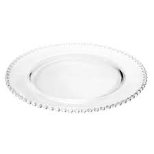

Os pratos
Fonte: www.coisadediva.com.br
A origem dos pratos
Os pratos são peças fundamentais na hora de saborear uma refeição,eles teriam surgido no século XVI, substituindo a tábua,ou travessa, que era utilizada na era medieval para facilitar o corte de alimentos e também onde se colocava o pão para absorver o caldo de alimentos sobre ele colocados.
O prato individual como utilizamos hoje foi introduzido na França pelo Cardeal Manzarine,que foi homenageado com a novidade sendo batizada como prato manzine.
Registros históricos indicam que os primeiros pratos teriam sido fábricados com ouro, prata ou estanho e era utilizado pelos nobres além de ser um símbolo de luxo.
Vamos conhecer agora alguns tipos de pratos existentes e suas funções :
Pires
Fonte: www.ricardoeletro.com.brÉ um prato pequeno que tem como função servir de base para xícaras.
Prato de pão
Fonte: www.rebalcomercial.com.brEsse prato serve para colocar o pão que será servido como acompanhamento de refeições líquidas como sopas e molhos.
Prato raso
 Fonte: www.secolcasa.com.brEsse é o tipo de prato mais utilizado, encontramos ele em almços e jantas,eventos especiais é um utensílio muito popular devido a sua praticidade.
Só não é recomendado o seu uso uso com refeições líquidas para evitar que derrame.
Prato fundo
Fonte: www.rebalcomercial.com.brÉ o prato destinado ao consumo de refeições líquidas, sua fundura e borda larga impedem que o líquido seja derramado.
Prato de sobremesa
Fonte: www.magazineluiza.com.brUm pouco menor que o prato para salada, ele é utilizado para servir sobremesas mas também é usado no café da manhã e lanches.
Prato de risoto
Fonte: www.rentalfesta.com.brO prato utilizado para comer risoto tem uma aparência um pouco engraçada com suas bordas largas e o seu fundo bem-delimitado acaba lembrando um chapéu virado.
Prato quadrado
Fonte: www.leroymerlin.com.brO prato quadrado é uma versão inovadora dos pratos,surgiu graças ao avanço tecnológico na fabricação desse objeto,já que a tecnologia antiga só permitia a criação de pratos redondos.
Com o passar do tempo ele acabou caindo no gosto popular e é usado como um excelente item decorativo na mesa.